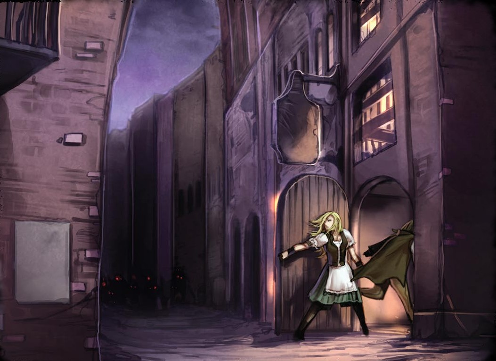

City Maps
Westcrown: City of Twilight
"Before the Age of Lost Omens, Westcrown dubbed itself 'the shining light of Aroden’s civilization.' Now, others taunt us and say, 'You can find anything, civilized or not, in Westcrown—except for Aroden.' Ignore outsiders — we know the truth. We did not fail Aroden — he failed us, though we Wiscrani held the faith! We embraced that adversity and replaced his betrayal with strength and order. The Hellknights paved our way and House Thrune walked it to greatness. I don’t blame them at all for moving the capital — this place only reminds you of past failures. Besides, better for a Wiscrani to make a living without so many priests or imperials around, and easier for those of us who deserve it to ascend to higher stations without them in our way."
— Alcini Vitaron of Alcini’s Apothecary in Westcrown
History
For eight centuries, Westcrown was a bastion of civilization and a symbol of national strength in Chelish eyes. As the city served as the center of Aroden’s faith, all Cheliax deemed the City of Nine Stars to be Aroden’s next home in the mortal world. The crown of western civilization rivaled Absalom as a destination of pilgrimages during the Age of Enthronement. Yet, with Aroden’s unexpected death, the once shining City of Nine Stars became the City of Twilight as Chelish citizens lost hope. Decades of bloody strife followed, and the only direction out of the chaos seemed to be the orderly tenets of diabolism. A city that once symbolized a people’s power now projects a people’s disappointment and despair. Hope has dimmed in the city, and shadow beasts walk the streets instead of Aroden’s clergy. Westcrown remains influential in its mercantile and military might, but also humbled by its lost faith and tarnished reputation.
One of the most varied and sophisticated cities of the Inner Sea, Westcrown is an enigma. By day, this city reminds many of any city or country they know, either because of the varied architecture or because people from all across Avistan and Garund now call Westcrown home. The many religious sites, whether active or debased, continue to draw the pious, the curious, and the devious. Even the ruins of the northern city draw interest among those looking for less-than-legal materials or rare treasures amid the dangerous rubble. But once the sun sets, only the foolish walk out of doors in Westcrown, for the shadow beasts prowl every darkened lane and waterway.
Climate and Construction
Summer is warm with frequent storms, Spring and Autumn are temperate favoring rain and occasional storms, and Winter is temperate and prone to sleet or hail during cold snaps, but never snow. Houses are built primarily to stay cool, favoring high ceilings, with fireplaces being rare outside of the kichen. The city's numerous navagable canals and channels mean more people travel the city by boat or flat-bottomed barges called adels than by horse or carriage. The city's sewer system is a marvel of ancient engineering, designed by the same geniuses who built the Arch of Aroden - a series of canal locks for raising and lowering the water level for ships traveling up and down the Adivian River; this allows most Wiscrani to never think about or worry about drainage or sewage, despite frequent rains and the town being barely above sea level, with buildings being permitted so long as they are above the king tide mark. Buildings in Westcrown are typically several stories tall and built of stone, with even the city's squalid tenements having stone foundations beneath their wooden construction. Slate-shingle roofs are common throughout, and streets are usually cobbled and rarely run in straight lines; in the poorer regos, the uneven cobbles present dangerous footing for the unwary.
Crime and Order
The primary forces of law and order in Westcrown are the Dottari. They wear the city's mark - Aroden's Eye - stenciled in black over a red field on their shields and tabards. Officers wear a reversed mark (red on black) on their left arms, their rank rising as it moves from the shoulder, to the forearm, to a ring on their hand. Dottari always travel in squads of seven - six soldiers and one Lieutenant - with five squads to each Captain and at least three Captains reporting to each Major. Each rego in Westcrown has at least two Majors, reporting to their respective Durotasi, or Rank Warden. There are four Durotasi, one for the Regidottari - Palace Wardens - who guard Parego Regiconda, one for the Rundottari - Ruin Wardens - which maintain the prison district of Rego Cader, one for the Condottari - Canal Wardens - which maintain security for the Westchannel, Dhaenflow, and the city's various cannals, and one for the regular Dottari which patrol the streets and operate the gates. Each Durotasi in turn reports to the Duxotar, or High Warden. The current Duxotar is Iltus Mhartis, the oft-drunken nephew of the current Lord Mayor Aberian Arvanxi.
A signature of Cheliax are the infamous Hellknights, knights of law who have pledged themselves to a specific order. Contrary to popular belief, Hellknights are not all evil, and are instead made up of lawfully-minded individuals. The name actually comes from a group of vigilanti nights formed with the intent of stopping the white plague - regular murders and suicides perpetuated by an organization called the Path of Grace. These knights became wildly popular but resorted to increasingly severe methods to bring about justice. When arrested, these knights pledged loyalty to the King but not to the Church of Aroden, and became commisioned by the King under a broad mandate to do what was necesary to bring about the greater good of peace and justice, but were cast out by Aroden's faithful who called them by the monicker, "Hellknights." Hellknights have the authority to police all of Cheliax, usually searching for specific types of criminals, as well as the authority to judge and carry out judgement on the criminals they apprehend. The closest and most concentrated Hellknight order in Westcrown is the Order of the Rack, based out of Citadel Rivad - an old Taldan fort - barely less than fifty miles outside the city. The Order of the Rack is tasked with uprooting rebellion, and does so most prominantely by carefully curating the nation's art, technology, and history, especially recalling all outdated written history of Cheliax and burning them in clarity pyres. The primary rivals of the Order of the Rack are the Order of the Scourge, which is the oldest and original order of Hellknights, focusing on uprooting all forms of corruption, organized crime, and abuses of power.
Under Chelish law and tradition, the Mayor of Westcrown (or Lord Mayor, as its current officeholder insistst upon) controls the Dottari and the tax coffers that maintain city stability. Over the seven decades since the royal seat of power moved to Egorian, three mayors watched taxes dwindle to a fraction of their former sums, forcing many cutbacks in services. When Lord Mayor Aberian Arvanxi was appointed, it was tantamount to political exile from the imperial court in Egorian for his long history of inexpert scheming. In the years since, Lord Mayor Arvanxi's affections for Chelish opera have seen him pump a large amount of public money into maintaining and rebuilding various opera houses and entertainment halls. While the public see this largely as wasteful spending, it keeps the mayor from meddling in the affairs of most common Wiscrani, making him the best mayor in recent memory. The former mayor was Arthan Challas, who died suddenly, and who himself replaced Dhargentu Vheed, a powerful diabolist who disappeared without a trace. Mayor Dargentu Vheed was renown for his frequent experiments and harsh rule and replaced Mayor Anvengen, the iron-fisted mayor and Thrune-Loyalist who took over during the Chelish civil war and disappeared shortly after House Thrune moved the imperial seat to Egorian.
According to legend, the Westcrown criminal underworld is ruled by the crime syndicate, the Council of Thieves. Generally regarded as a myth, this council supposedly began over a hunred years before the death of Aroden with the uniting of seven of the most powerful gangs in Westcrown, eventually spreading to control the city's slave trade, drug trafficking, smuggling, bribery, extortion, racketeering, money laundering, and assassinations. Supposedly, the leaders of this crime syndicate are now all wealthy nobles, holding nearly if not all the reigns in Westcrown, and controlling the city mostly through a combination of competing businesses, influencing smaller local gangs, and coordinating all the shipping in the city to ensure that whenever money changes hands, it lines their pockets.
Westcrown by Day
With light hitting the Arodennama first and last each day, most Wiscrani learn how to tell the time (in a very general sense) by looking on the ancient statue. When the light hits Arodens Eye's, the Dottari across their city blow their whitles, marking the end of curfew. By then, most Wiscrani have awoken and eaten breakfast, and they begin their day. By first bell, one hour after sunrise, most stores open and most workers need to be at work. Lunch is often taken between fourth and fifth bell, with dinner usually being between the tenth and eleventh bell. With the nightlife effectively gone, most drinking, theatrical performances, and general revelry tends to start after dinner, any time between tenth and thirteenth bell. This time of year, the thirteenth bell is the last before curfew and serves as a warning, with the Dottari blowing their wistles once sunlight is no longer upon Aroden's Eye, marking the official beginning of curfew. For the most part, the Wiscrani have gotten used to the terrors the night brings, keeping extra bedrolls handy for unexpected guests and paying close attention to the time when the evening draws to a close. Due to stringent property laws, even the shadiest Wiscrani avoid entering homes, business, or ruins without permission, as Wiscrani hold that poperty owned extends from the origin of lightning in the sky to the deepest caverns in the earth, and tresspassing is a heavy crime punishable by fines, jail, and possibly death. Instead, those looking for work tend to stick to the streets, with every Shrine to Asmodeus having a place for people to post advertisements for jobs, news, and requests, all under the watchful eyes of the church's Inquisitors.
Westcown by Night
Reports of strange beasts stalking the night first surfaced in 4676 AR, which was originally ignored and downplayed by the city's government. Rumors spread quickly of a return of the White Plague, but the tales were soon replaced by reports of a shadowy calamity at Delvehaven, the local Pathfinder lodge. The Dottari were sent to stamp out the problem, but proved ill equiped for midnight hunts, leading to a temporary curfew being put into place for everyone's protection. Now over 30 years later, this curfew remains in effect. With the dying of every day's light, businesses hurriedly close and respectable homes light lanterns outside their doors. The pyrahje light certain major streets and magically lit shrines to Asmodeus pockmark major intersection while the Dottari patrol between these islands of light carrying halorans. Breaking curfew carries a fine of fifty silver ferries, though most Dottari hurry such scofflaws along their way and inside. Despite these precautions, weekly tales of new deadly attacks on curfew breakers keep people cowed indoors, with every Wiscrani having their own wildly varrying theory as to whom these beasts are, where they come from, and why they continue to hunt Westcrown's streets.
It is telling, perhaps, that when the shadow curse came to Westcrown, it's darkness fell first on those who would otherwise be its most dedicated opponents - the faith of Sarenrae. Shortly after the first rumors of beasts stalking the night, a darkness came upon the Temple of Sarenrae shortly after dusk, and when the sun rose, it shone upon an empty edifice - blood soaked the stone tiles of the temple floor, but no bodies were ever found. Declared cursed by the mayor at the time, it has remained closed to this day and stands as a memorial to those lost to the darkness.

Locations in Westcrown
Parego Regicona
The river islands (called Westcrown Island by outsiders despite the fact the "island" is actually eight islands seperated by stone-lined canals) make up the "Floating Palace," or Parego Regicona. Home to the city's government and wealthy elite, the Regicona is where the royal castle used to be before the capital was moved to Egorian. More than 70% of the wealth in Westcrown is in this Parego, where buildings cling to past oppulance and ruins are replaced with more modern buildings, and an exterior defensive wall, manned by the better-paid Regidottari, further defend the Parego from water assault while keeping the poor relegated to the rest of the city. Parego Regicona is further divided into Rego Corna, Rego Laina, and Rego Aerum. Click on any of them below to find out more about them.
- Rego Corna: The "Crown Sector"
- Rego Laina: The "Blade Sector"
- Rego Aerum: The "Treasure Sector"
Parego Dospera
"Despair's Altar" refers to the ruins and downtrodden slums of the northern shores of Westcrown. Roads are often in disrepair, and running in the Dospera invites a twisted ankle or broken leg. The Dospera is divided into two halves, the northern ruined prison Rego Cader with the Rundottari sureshots on the walls around it, and the southern slum of Rego Crua.
- Rego Cader: The "Dead Sector"
- Rego Crua: The "Blood Sector"
Parego Spera
"Hope's Altar" occupies the southern peninsula of Westcrown and contains the still-thriving money-making lifeblood sections of the city that were formerly looked down upon by the elite. Unlike the Regicona, trade and coin rule here more than blood and politics, with the Spera containing most of the city's rising middle-class. Parego's Spera and Dospera are seperated by the Canaroden, the longest, deepest, and once grandest of all canals in Westcrown, and bridged by the massive Pegasi Bridges. Both bridges and the canal are decorated heavily and distinctly; the western bladewing bridge is depicted as a pegasus with swords for feathers and decorated with Wiscrani heroes; the eastern span is a depiction of Truemount, Arodens former pegasus; the Canaroden is decorated with depictions of Aroden, his holy deeds, and his 12 guises, all of which have been heavily defaced and have since mysteriously recovered over time. Parego Spera is seperated into three Rego's, Rego Scripa, Rego Pena, and Rego Sacero. Click on any of them below to find out more about them.
- Rego Scripa: The "Scribe Sector"
- Rego Pena: The "Coin Sector"
- Rego Sacero: The "Priest Sector"
Fiugo Estra
Few Wiscrani live on the Eastern bank of the Adivian, the Fiugo Estra, as the currents and eddies of the river and the Dhaenflow swirl the city's sewage and trash along the eastern shore. The bank is marshy and prone to flooding, making it difficult to build upon. However, with the soil so richly irrigated and fertilized, the rolling hills above the riverbank are excellent for growing olives and grapes, with large viticultural Vaneo's controlled by wealthy landowners, providing the majority of the farmland for Westcrown in combination with the swampy Dhaenfends. A small number of docks and cannals allow goods to flow into and out of these areas, though many become tidelocked during certain times of the day or year. The distance from the majority of Condottari patrols and an abundance of tidal caves pockmarking the bank also make Fiugo Estra home to many of the smugglers and pirates attempting to get things in and out of Cheliax; the Condottari routinely flush these caverns when the tides permit, occasionally finding smugglers or crates of goods, but more often finding the bodies of those trapped when the tides came in. Just beyond the riverbank is the infamous Hagwood, the westernmost piece of the former Verdruran Forest's boundaries and the source of the fey still vexing Cheliax. Most of the Hagwood was burned away during the Chelaxian civil war and subsequent Thrune ascendancy, leaving the wood shriveled and pocked and scattering most of the few surviving fey into villages, sewers, and streets less hospitable and more populated than their first world habitat.

{kind=link}
{kind=link}
{kind=link}